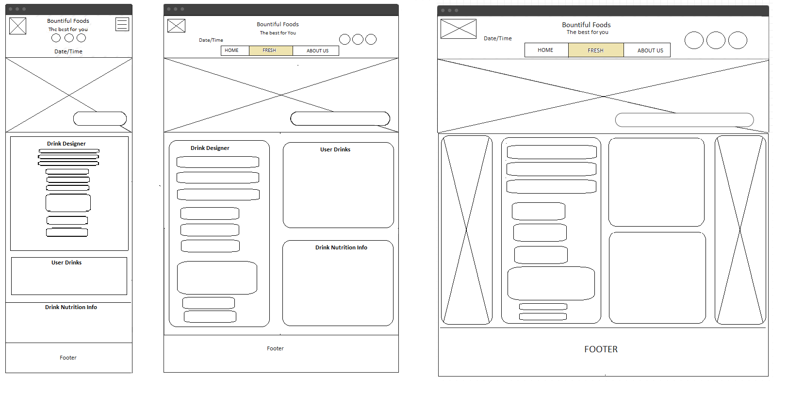

Target Audience
The target audience for this website includes people of all ages who are looking for tasty and healthy foods and beverages. Those who are interested in placeing their orders online, as opposed to ordering in person, make up the main target audience. However, others included in the target audience include potential suppliers and those who want to learn more about the company and the sources and suppliers the company uses.
The majority of the people that use the site will most likely be from the coastal area of California, as the company is based in in Southern California. However, the site will also be used by tourists who are visiting the area and are looking for a healthy and tasty snack or meal. The average user will likely be young adults, as they are the ones who are most likely to be interested in ordering online and taking advantage of the technology available. The main demographic the site will aim for will be teens and young adults, between the ages of 16 to 30. Especially people who are active and focused on living a healthy lifestyle.
Job Title: Pediatrician
Age: 43
Location:Carlsbad, CA
Education:M.D.
Income:$150,000
Family Status: Married, 3 kids
Technology:iPhone 13 Pro, iPad Pro 12.9"
Attitudes and Behaviors: Andrea is a doctor and a mom. She is always looking for healthy options for food and snacks for both herself and her kids. She prefers ordering food online and picking it up since she is always busy. Since she has three kids, she tends to look for options that are affordable. She likes shopping locally.
Job Title: Student
Age: 26
Location: San Diego, CA
Education: Bachelor's Degree
Income: $50,000
Family Status: Married, no kids
Technology: iPhone 11 Pro Max, MacBook Pro 16", iPad Pro 12.9"
Attitudes and Behaviors: Juan is a student who is looking for a healthy and tasty lunch option. He is looking for a place that is close to his school, and that has a variety of options. He is also looking for a place that is affordable, and that he can order online.
Scenarios
- Customers come to the site to learn about our company.
- Customers come to learn about our products nutrition.
- Customers come to learn where our food trucks are at.
Navigation
Site Map
Wireframes Sketches
Home

Fresh
About Us